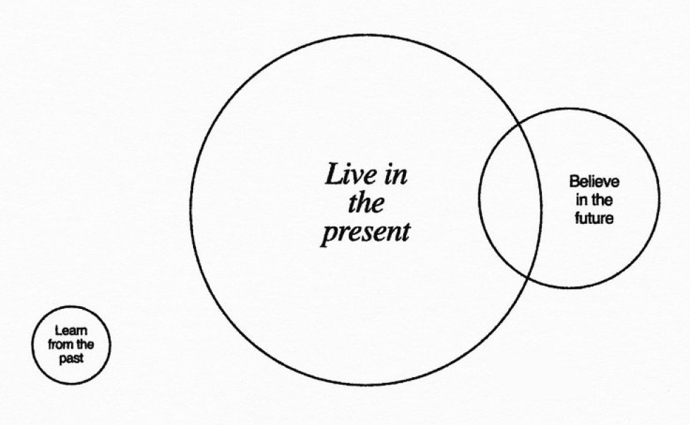
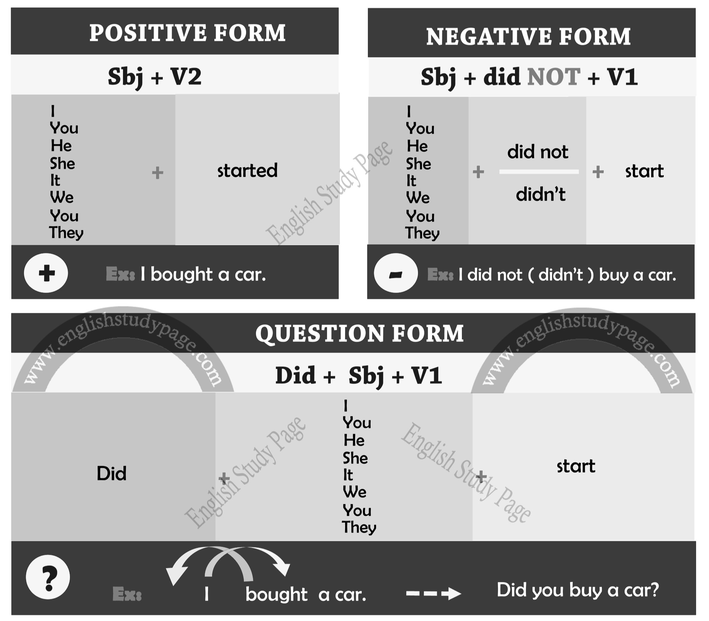

PAST SIMPLE
ВІДПУСТИТИ МИНУЛЕ
Чи бувало у вас відчуття, що ви застрягли у минулому? Живите минулими помилками та поразками?
У цьому уроці ми поговоримо про минулий час та способи відпустити минуле. 
1. Запитуйте себе про свої почуття
Ставте собі запитання «Що я зараз відчуваю?» протягом дня. Воно запускає механізм самоаналізу у вашій голові та допомагає розібратись у власних почуттях.
Більш того, ставити це запитання варто не лише собі, а й близьким. Це дасть змогу уникнути багатьох непорозумінь і сварок, що виникають через непорозуміння.
2. Зосередьтесь на чомусь одному
Коли ви вчитеся жити сьогоднішнім днем, корисно зосереджувати свою увагу на чомусь одному. Хоча багатозадачність і робота над кількома справами одночасно може здаватися продуктивнішою, постійне жонглювання кількома завданнями заважає жити теперішнім моментом та погіршує концентрацію.
3. Приймайте речі такими, якими вони є
Зосередьтеся на прийнятті речей такими, якими вони є, а не на тому, якими ви хочете їх бачити. Ви не можете контролювати все, що відбувається навколо вас; іноді життя буде відрізнятися від того, як ви хочете, щоб воно було. Практика прийняття допоможе вам відпустити речі у вашому житті, які ви не можете контролювати.
4. Практикуйте вдячність
Якщо ви постійно зосереджені на тому, чого у вас немає, ви не знаходите часу, щоб оцінити те, що у вас є прямо зараз, у цей момент.
Один із способів практикувати вдячність - написати список речей, за які ви вдячні, і переглядати його щодня. Спробуйте написати принаймні три речі. Як варіант, ви можете просто виписати стільки речей, скільки зможете пригадати за певний період часу.
5. Відпочивайте від соціальних мереж та ґаджетів
Хоча вам може здаватися, що постійна перевірка телефону допомагає вам залишатися на зв'язку зі світом, насправді це негативно впливає на вашу здатність жити теперішнім.
Скільки разів ви сідали за роботу, а потім усвідомлювали, що перевіряєте соціальні мережі? Важливо навчитися не дозволяти технологіям поглинути ваше життя, оскільки це може завадити вам бути уважними до того, що відбувається навколо вас.
Past Simple
Він використовується для:
а) Вираження нетривалих дій в конкретний момент у минулому;
б) Вираження дій, що завершилися в минулому та не мають відношення (видимих результатів) у теперішньому;
в) Опису дій, що відбулися одного разу в минулому і більше не можуть повторитися в теперішньому або у майбутньому через певні обставини;
г) Перерахування декількох дій у минулому, що відбувалися послідовно, одна за одною.
Маркери часу:
- yesterday – вчора
- the day before yesterday – позавчора
- just now – тільки-но
- the other day – на днях
- last week – минулого тижня
- last month – минулого місяця
- last year – минулого року
- last decade – минулого десятиріччя
- last century – минулого сторіччя
- an hour ago – годину тому
- three hours ago – три години назад
- two weeks ago – два тижня назад
- in 1991 – в 1991 році
- at 5 o'clock – о 5 годині
Правила формування:
Past Simple - це про вміння відпустити минуле, тож наведемо декілька прикладів використання:
- I focus on one task at a time, because multitasking isn't beneficial for me. - Я зосереджуюсь на одному завданні тому, що багатозадачність не є корисною для мене.
- She writes one thing she is grateful for every day. - Вона записує одну річ, за яку вона вдячна кожного дня.
- They don't check their phone at weekends. - Вони не перевіряють телефон на вихідних.
- He doesn't often ask himself about his feelings, that's why he is always so irritated. - Він не часто запитує себе про свої почуття, тому він завжди такий роздратований.
- Do we practice mindfulness on Tuesdays? - Чи ми практикуємо усвідомленість щовівторка?